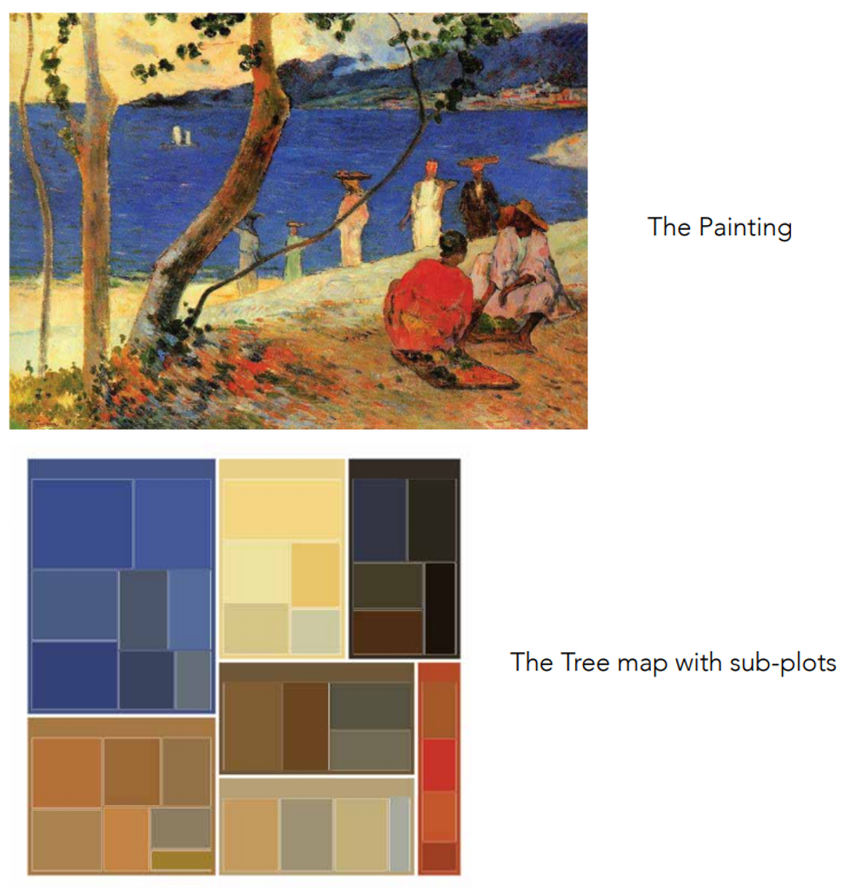

Have you ever wondered if artists had a pattern in the colors of their paintings?
If yes, then you must check out this cool project called “Hues & Tones” by Tanvi Modi and Yuhang Li.
AI Skunkworks provided a platform to these students to connect and collaborate. We connected them and helped draw
project roadmap. In no time, things got going and the project came out amazing! Here are a few glimpses:

Research Members

Tanvi Modi
Master in Information Design and Visulization at Northeastern University
LinkedIn

Yuhang Li
Master in Engineering Management and Data Mining at Northeastern University
LinkedIn